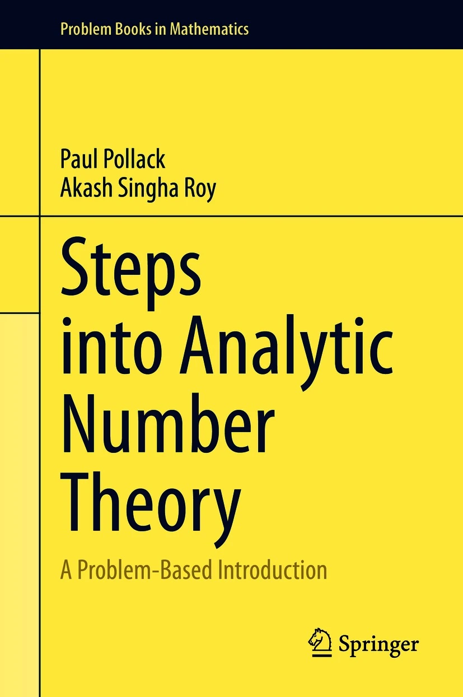
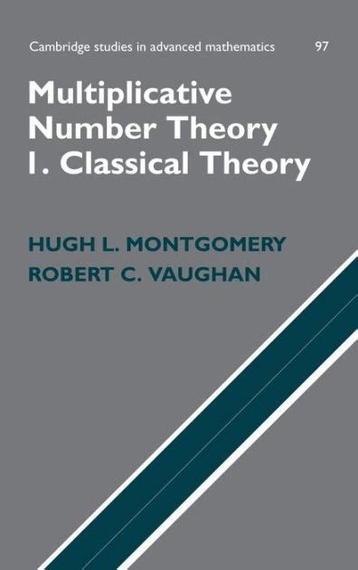
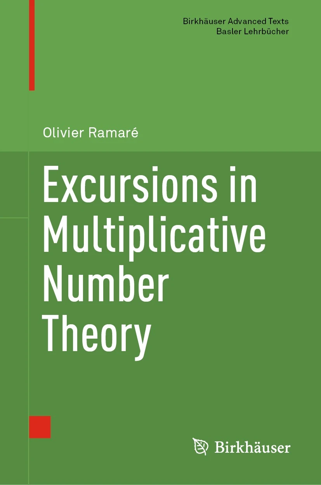

MATH 8440: Multiplicative Number Theory
MWF, 1:50-2:40 PM, Boyd 326
406 Boyd Graduate Studies Building
M 4:00 PM
W 12:00 PM
F 4:00 PM
Course summary to date (reverse chronological order)
- 5/1 Smooth numbers: For $x^{\epsilon} \le y \le x$, we have $\Psi(x,y) \approx x\rho(u)$, where $u=\log{x}/\log{y}$.
- 4/28 Erdős's multiplication table theorem.
- 4/26 Assembling the proof of the prime number theorem.
- 4/24 The nonvanishing of $\zeta(s)$ on $\Re(s)=1$, revisited. Lower bounds for $|\zeta(s)|$ slightly left of $\Re(s)=1$.
- 4/21 Plan of attack for PNT. Bounding $|\zeta'(s)|$ from above slightly left of $\Re(s)=1$.
- 4/17 Estimating $\sum_{n\le x} d(n)$ as an example of Perron's formula.
- 4/14 Sketch of a Perron formula approach to estimating $\sum_{n\le x} d(n)$. Upper bounds on $\zeta(s)$ when $\Re(s)>0$.
- 4/12 The truncated Perron formula.
- 4/10 Nonvanishing of $\zeta(s)$ on $\Re(s)=1$. Start of discussion of Perron's formula.
- 4/7 Leading of primes. Weyl equidistribution. Continuing $\zeta(s)$ to all of $\mathbb{C}$.
- 4/5 Completion of the proof of Dirichlet's theorem. See this MathOverflow post for other proofs of $L(1,\chi)\ne 0$. Brief discussion of Dirichlet density.
- 4/3 The functions $L(s,\chi)$ in the region $\Re(s)>0$. Definition of $\mathrm{Log}\,L(s,\chi)$. Reduction of the proof of Dirichlet's theorem to the nonvanishing of $L(1,\chi)$.
- 3/31 Orthogonality relations for characters of finite abelian groups. Dirichlet characters from characters of the unit group mod $q$. Continuing $\zeta(s)$ to $\Re(s)>0$.
- 3/29 Completion of the sketch of the proof of Dirichlet when $q=4$. Characters of finite abelian groups.
- 3/27 Landau's Lemma: If $f(n)\ge 0$ and $\sigma_f \in \mathbb{R}$, then $\sigma_f$ is a singularity of $D(f,s)$. Start of discussion of Dirichlet's theorem, including most of the proof when $q=4$.
- 3/24 If $D(f,s)$ converges for $s=s_0$, it converges uniformly on compact subsets of $\Re(s) > \Re(s_0)$. If $D(f,s)$ and $D(g,s)$ converge and represent the same function in some right half-plane, then $f=g$.
- 3/22 Units in $\mathcal{D}(\mathbb{C},s)$. Dirichlet series of multiplicative functions. Three theorems on power series.
- 3/20 The Möbius function as a natural object in the theory of formal Dirichlet series. Two bizarre proofs of the infinitude of primes.
- 3/17 Introduction to formal Dirichlet series.
- 3/15 Wrap up of sieves. Two applications of power series.
- 3/13 Reminder of Brun's sieve. Application to almost prime values of polynomials.
- 3/3 The Brun--Hooley lower bound sieve (statement only). A general (but not as general-as-possible!) version of Brun's sieve. Application to number of Goldbach representations.
- 3/1 Completion of the proof of $\pi_2(x) \ll x/(\log{x})^2$ via the Brun--Hooley sieve.
- 2/27 Set-up of the Brun--Hooley upper bound. Start of application of Brun--Hooley upper bound to $\pi_2(x)$.
- 2/24 Proof of $\pi_2(x) \ll x (\log\log{x})^2/(\log{x})^2$ using Brun's pure sieve. Idea of Brun--Hooley sieve.
- 2/22 Brun's theorem that $\sum_{p} 1/p$ converges, when $p$ ranges over primes with $p+2$ prime. Brun's pure sieve: general setup.
- 2/20 The sieve of Eratosthenes applied to estimating $\pi_2(x)$. Comparison with what Brun's sieve/Fundamental Lemma would give.
- 2/17 Completion of proof: If $\mathcal{P}$ is any set of primes, then $S(\mathbb{Z}^{+},\mathcal{P})$ has asymptotic density $\prod_{p\in \mathcal{P}}(1-1/p)$. Applications, including to sums of two squares.
- 2/15 General sieve setup. Start of proof: If $\mathcal{P}$ is any set of primes, then $S(\mathbb{Z}^{+},\mathcal{P})$ has asymptotic density $\prod_{p\in \mathcal{P}}(1-1/p)$.
- 2/13 Start of discussion of sieve methods. The fundamental property of the Mobius function and the upper bound $\pi(x) \ll x/\log\log{x}$.
- 2/10 Heuristics for counts of primes in sequences.
- 2/8 Proof of Mertens' theorem on $\prod_{p \le x} (1-1/p)$. Discussion of $x/\log{x}$ and $\mathrm{Li}(x)$ as approximations to $\pi(x)$; statement of RH in terms of $|\mathrm{Li}(x)-\pi(x)|$.
- 2/6 Proof of Mertens' theorem on $\sum_{p \le x} 1/p$.
- 2/3 Proof of Chebyshev's Theorems B and C. Start of discussion of Mertens' theorem.
- 2/1 Introduction of Chebyshev's $\theta$-function. $\theta(x)$ and $\psi(x)$ are close. $\theta(x)/x$ and $\pi(x)/(x/\log{x})$ are close. Proof of Chebyshev's Theorem A: If $\pi(x)/(x/\log{x})$ tends to a limit, that limit is $1$.
- 1/30 Completion of the proof that the primes have density $0$. The estimate $T(x) =x \log{x}-x+O(\log(ex))$ for $x\ge 1$, and the identity $T(x) = \sum_{m \le x} \Psi(x/m)$.
- 1/27 Estimating $\sum_{n \le N} 1/n$ to within $O(1/N^3)$. Densities of sets of integers, including basic examples. Most of a proof that the primes have density $0$.
- 1/25 Example: Estimating $\sum_{p \le x} p$. Introduction to Euler--Maclaurin summation.
- 1/23 Proof of Stirling's formula, modulo determination of the constant (see HW). Introduction to partial summation.
- 1/20 More on $O$-notation. Example: Estimating $(1+1/x)^x$. Case study of sums: estimating $\sum_{n\le N} 1/n$.
- 1/18 One last proof of the infinitude of primes. The divergence of $\sum 1/p$ and consequences for $\pi(x)$. Introduction to $O$-notation.
- 1/13 Still more on the infinitude of primes.
- 1/11 More on the infinitude of primes.
- 1/9 Syllabus. The infinitude of primes.
Course summary
This is an introduction to multiplicative number theory. We will use methods from (real and complex) analysis to study questions connected with, or motivated by, the multiplicative structure of the positive integers.
Owing to the Unique Factorization Theorem, the prime numbers play a central role (maybe the central role) in this story. So we will spend a great deal of time discussing what we know and don't know about their distribution. (Sample questions: About how many primes are there up to a large stopping point $x$? What if we only care about primes that end with the digits $2023$? What about primes beginning with those digits?) Perhaps surprisingly, given how elementary the questions may seems, satisfactory answers will depend on developing the complex-analytic theory of the Riemann zeta function and Dirichlet $L$-functions.
In addition, we will spend a great deal of time thinking about the value distribution of arithmetic functions, meaning functions from the positive integers to the complex numbers. Here the functions of interest are those that encode what might be called ``anatomical'' properties; some of the most important examples are $\tau(n)$ [the number of divisors], $\omega(n)$ [the number of distinct prime divisors], and $\sigma(n)$ [the sum of the divisors]. Sample questions: If we sample all numbers up to a large stopping point, how big do each of these functions get? How does this maximum compare to the average (arithmetic mean)? And is the average or the maximum (or neither) representative of what is happening for most numbers?
Textbooks
-

Not Always Buried Deep
Paul Pollack
-

A conversational introduction to algebraic number theory: Arithmetic beyond $\mathbb{Z}$
Paul Pollack and Akash Singha Roy
-

Multiplicative Number Theory I
Hugh L. Montgomery and Robert C. Vaughan
-

Excursions in Multiplicative Number Theory
Olivier Ramaré
There is no required textbook for this course. However, there are a number of texts that I plan to draw from in my lectures. Some of the most important (for us) are listed above.
Homework/Exams/Grading
There are no exams in this class and your grade will be based entirely on homework. The plan is to assign homework every one to two weeks; these will be long-ish problem sets where you are asked to turn in a few problems of your choosing. Those who intend to specialize in number theory are strongly encouraged to work many more problems than they turn in.
To receive an A in the class, you must make a serious effort on the homework; concretely, this means correct solutions to at least half of the problems you turn in. If you do not turn in any homework but are an active participant throughout the semester, you will receive a B+.
Special accommodations
Students with disabilities who may require special accommodations should talk to me as soon as possible. Appropriate documentation concerning disabilities may be required. For further information, please visit the Disabilities Resource Center page.
Disclaimer
The course syllabus is a general plan for the course; deviations announced to the class by the instructor may be necessary.